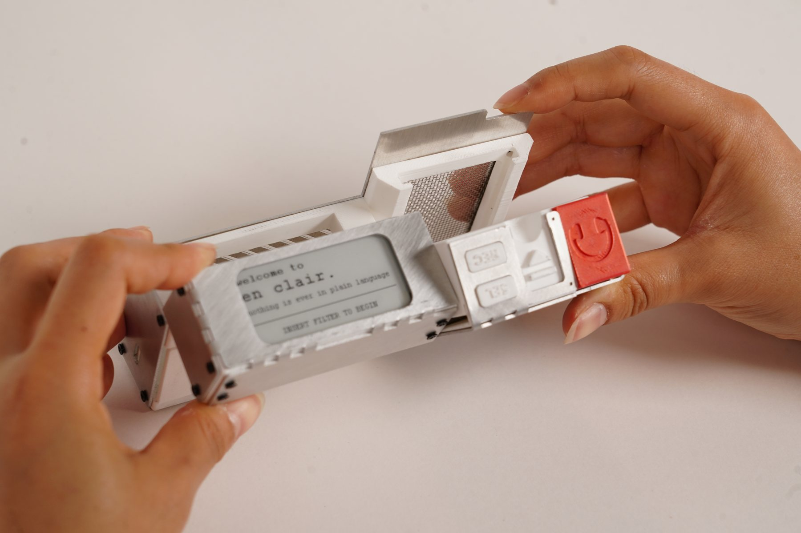

en clair

Design methodology
HCI design
Large language objects (LLOs)
Mechanism design
Course4.043: Design Studio: Interaction Intelligence (Project II)
Timeline8 weeks, Spring 2026
TeamElaine Liu, Krystal Montgomery (MIT '26)
Tools
Fusion
Waterjet cutting
FDM 3D printing
Arduino IDE
Outputresearch paper
Is what someone says ever what they really mean? en clair is a portable device for that gap. Worn at the hip like a Walkman, it captures speech directed at the listener, rewrites it through a large language model conditioned by a perceptual filter, and plays the result back through noise-cancelling headphones. Filters live on swappable NFC cartridges: slot one in, describe how you want to hear the world, and everything retranslates. I built en clair with Elaine Liu and Krystal Montgomery.
[CONFIRM: add your role — e.g., object design, scissor linkage, enclosure.]
Context/Motivation
4.043: Interaction Intelligence is a studio on designing interaction, behavior, and intelligence across objects and spaces, from physical interfaces to neural networks and large language models. Our final brief was to make a physical AI object — what Prof. Marcelo Coelho calls a Large Language Object, where the intelligence is inseparable from the form.
Problem Framing
I was interested in the separation between what someone means and what they actually say — one filter — and how the listener interprets it — another. Every conversation is already a multi-filtered experience. We set out to externalize that filtering rather than "fix" communication, and used that proposition to judge every later decision. Filtered speech would arrive as audio, in the same sensory channel as the original, and the act of physically inserting a filter was designed before any of the electronics that would make it work.
Process
Form factor
en clair can be handheld or worn at the waist, drawing directly on the Sony Walkman's reframing of listening as personal and portable. A modified scissor linkage lets it stay hip-mounted while rotating the e-ink display up to face the user whenever the device is opened. Since on-screen prompts are only needed while choosing a filter, the display is most accessible exactly then.
Cartridges and electronics
Each cartridge carries an NFC tag, read by a PN532 module — giving every cartridge a unique, swappable identity without complex electrical signatures. The device runs on an ESP32-S3 with an INMP441 I2S microphone and a 2.13 in e-ink display, chosen over a high-resolution or touch screen for its low power draw, legibility in any lighting, and visually quiet aesthetic. Everything mounts to a custom double-sided PCB milled in-house.
Software and prompt design
A laptop server transcribes speech with Whisper, filters it through Claude, and speaks the result back with ElevenLabs. New cartridges trigger a two-stage call: the user's spoken description is turned into a filter system prompt, which then drives all filtering on that cartridge — more reliable than asking users to write prompts themselves. To stop "POV drift" into narration as conversations grew, every turn is wrapped with an anchor that restates the listener's perspective.
Room for Improvement
The pipeline adds several seconds of latency between speech and filtered playback, so the filtered voice often arrives after the conversation has moved on — sometimes disorienting, sometimes revelatory. The device still depends on a tethered laptop, so it isn't yet truly portable. And some filters surfaced stereotypes we never designed: a filter described as "an Asian mom" turned "I'm proud of you" into "you can do better."
Outcome
- Working end-to-end pipeline: ESP32-S3 device ↔ laptop server (Whisper → Claude → ElevenLabs)
- Filters consistently produced recognizable — but meaningfully different — versions of the input
- Two-stage meta-prompt proved more reliable than user-written system prompts
- Per-turn perspective anchors substantially reduced POV drift
- Research paper co-authored
Reflection
[NEEDS INPUT: 2–3 sentences in your voice.]